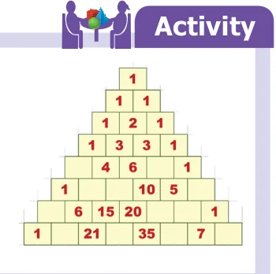
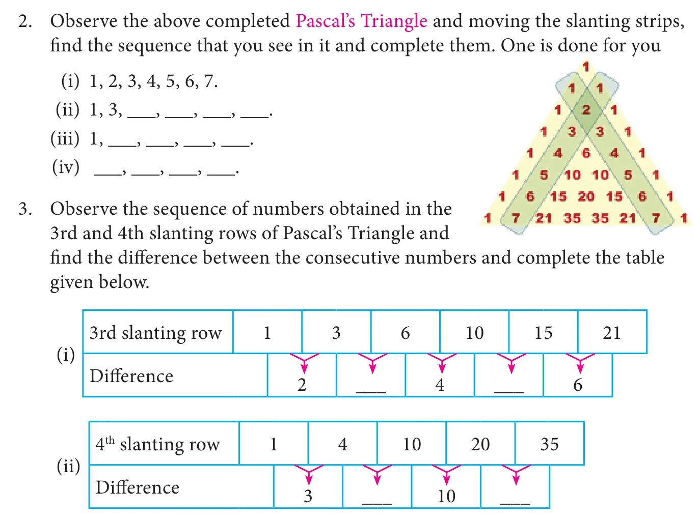
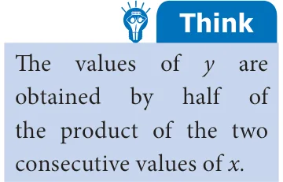
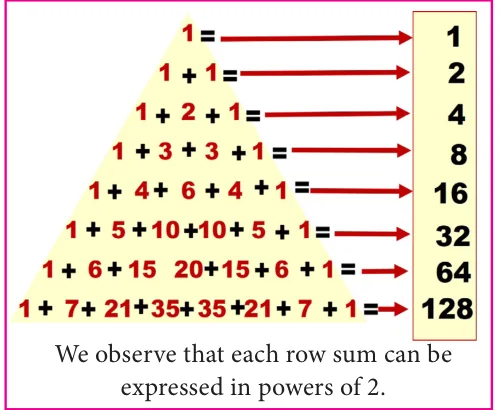
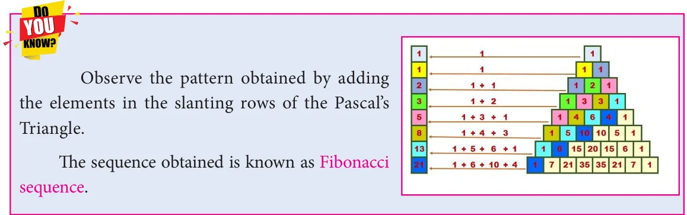
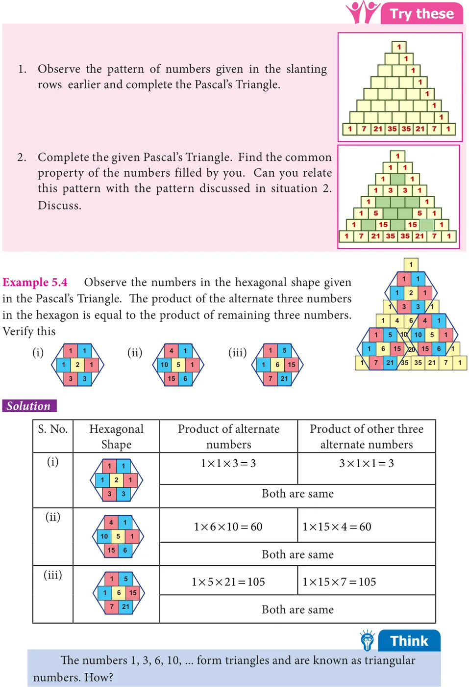

The triangle of numbers created by the famous French Mathematician
and philosopher Blaise Pascal which is named after him as Pascal's Triangle. This Pascal's Triangle of numbers provides lot of scope to observe various types of number patterns in it.

- Complete the following Pascal's Triangle by observing the number pattern.

Example 5.2
Tabulate the \(3^{\text{rd}}\) slanting row of the Pascal's Triangle by taking the position of the numbers in the slanting row as \(x\) and the corresponding values as \(y\).
| \(x\) | 1 | 2 | 3 | 4 | 5 | 6 | ... |
|---|---|---|---|---|---|---|---|
| \(y\) | 1 | 3 | 6 | 10 | 15 | 21 | ... |
Verify whether the relationship, \(y = \frac{x(x+1)}{2}\) between \(x\) and \(y\) for the given values is true.
Solution
Observe the table carefully. To verify the relationship between \(x\) and \(y\), let us substitute the values of \(x\) and get the values of \(y\).

If \(x = 1\), \(y = \frac{1(1+1)}{2} = \frac{2}{2} = 1\)
If \(x = 2\), \(y = \frac{2(2+1)}{2} = \frac{6}{2} = 3\)
If \(x = 3\), \(y = \frac{3(3+1)}{2} = \frac{12}{2} = 6\)
If \(x = 4\), \(y = \frac{4(4+1)}{2} = \frac{20}{2} = 10\)
If \(x = 5\), \(y = \frac{5(5+1)}{2} = \frac{30}{2} = 15\)
Hence, \(y = \frac{x(x+1)}{2}\) is verified.
Example 5.3
Can row sum of elements in a Pascal's Triangle form a pattern?
Solution
The row sum of elements of a Pascal's Triangle are shown below:

First row \(= 2^{1-1} = 1\)
Second row \(= 2^{2-1} = 2 \times 1 = 2\)
Third row \(= 2^{3-1} = 2 \times 2 = 4\)
Fourth row \(= 2^{4-1} = 2 \times 2 \times 2 = 8\)
Fifth row \(= 2^{5-1} = 2 \times 2 \times 2 \times 2 = 16\)
Sixth row \(= 2^{6-1} = 2 \times 2 \times 2 \times 2 \times 2 = 32\)
Seventh row \(= 2^{7-1} = 2 \times 2 \times 2 \times 2 \times 2 \times 2 = 64\)
Eighth row \(= 2^{8-1} = 2 \times 2 \times 2 \times 2 \times 2 \times 2 \times 2 = 128\)
Here \(x\) denotes the row and \(y\) denotes the corresponding row sum. The values of \(x\) and \(y\) can be tabulated as follows:
| \(x\) | 1 | 2 | 3 | 4 | 5 | 6 | 7 | 8 | ... |
|---|---|---|---|---|---|---|---|---|---|
| \(y\) | 1 | 2 | 4 | 8 | 16 | 32 | 64 | 128 | ... |
The relationship between \(x\) and \(y\) is \(y = 2^{x-1}\).

